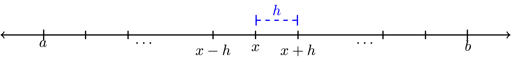
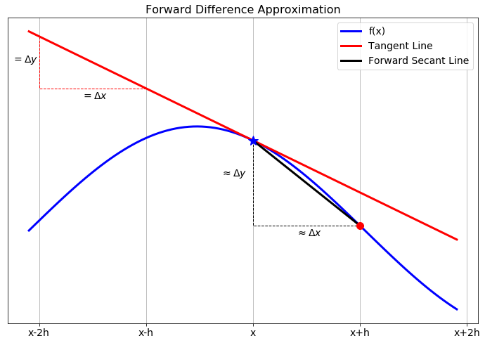
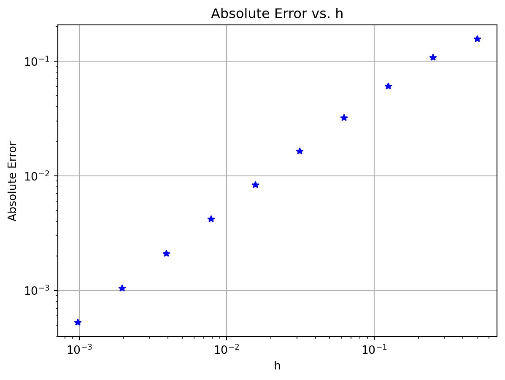
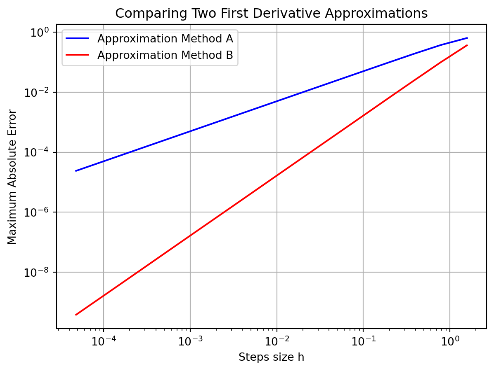

In this chapter we build some of the common techniques for approximating the two primary computations in calculus: taking derivatives and evaluating definite integrals. The primary goal of this chapter is to build a solid understanding of the basic techniques for numerical differentiation and integration. These will be crucial in the later chapters of this book when we numerically integrate ordinary and partial differential equations.
Recall the typical techniques from differential calculus: the power rule, the chain rule, the product rule, the quotient rule, the differentiation rules for exponentials, inverses, and trig functions, implicit differentiation, etc. With these rules, and enough time and patience, we can find a derivative of any algebraically defined function. The truth of the matter is that not all functions are given to us algebraically, and even the ones that are given algebraically are sometimes really cumbersome.
Exercise 5.1 💬 When a police officer fires a radar gun at a moving car it uses a laser to measure the distance from the officer to the car:
The speed of light is constant.
The time between when the laser is fired and when the light reflected off of the car is received can be measured very accurately.
Using the formula \(\text{distance} = \text{rate} \cdot \text{time}\), the time for the laser pulse to be sent and received can then be converted to a distance.
How does the radar gun then use that information to calculate the speed of the moving car?
Integration, on the other hand, is a more difficult situation. You may recall some of the techniques of integral calculus such as the power rule, \(u\)-substitution, and integration by parts. However, these tools are not enough to find an antiderviative for every given function. Furthermore, not every function can be written algebraically.
Exercise 5.2 💬 In statistics the function known as the normal distribution (the bell curve) is defined as \[\begin{equation}
N(x) = \frac{1}{\sqrt{2\pi}} e^{-x^2/2}.
\end{equation}\] One of the primary computations of introductory statistics is to find the area under a portion of this curve since this area gives the probability of some event \[\begin{equation}
P(a < x < b) = \int_a^b \frac{1}{\sqrt{2\pi}} e^{-x^2/2} dx.
\end{equation}\] The trouble is that there is no known antiderivative of this function. Propose a method for approximating this area.
Exercise 5.3 💬 A dam operator has control of the rate at which water is flowing out of a hydroelectric dam. He has records for the approximate flow rate through the dam over the course of a day. Propose a way for the operator to use his data to determine the total amount of water that has passed through the dam during that day.
What you have seen here are just a few examples of why you might need to use numerical calculus instead of the classical routines that you learned earlier in your mathematical career. Another typical need for numerical derivatives and integrals arises when we approximate the solutions to differential equations later in the module.
Throughout this chapter we will make heavy use of Taylor’s Theorem to build approximations of derivatives and integrals. This has become a recurring scheme in this module: Taylor’s Theorem is your all-purpose approximation tool. It suggests the approximation methods and it allows you to understand the error that comes with the approximation.
5.2 Differentiation with Finite Differences
5.2.1 The First Derivative
Exercise 5.4 💬 Recall from your first-semester Calculus class that the derivative of a function \(f(x)\) is defined as \[\begin{equation}
f'(x) = \lim_{\Delta x \to 0} \frac{f(x+\Delta x) - f(x)}{\Delta x}.
\end{equation}\] A Calculus student proposes that it would just be much easier if we dropped the limit and instead just always choose \(\Delta x\) to be some small number, like \(0.001\) or \(10^{-6}\). Discuss the following questions:
When might the Calculus student’s proposal actually work pretty well in place of calculating an actual derivative?
When might the Calculus student’s proposal fail in terms of approximating the derivative?
In this section we will build several approximation of first and second derivatives. The primary idea for each of these approximations is:
Partition the interval \([a,b]\) into \(N\) sub intervals
Define the distance between two points in the partition as \(\Delta x\).
Approximate the derivative at any point \(x\) in the interval \([a,b]\) by using linear combinations of \(f(x-\Delta x)\), \(f(x)\), \(f(x+\Delta x)\), and/or other points in the partition.
Partitioning the interval into discrete points turns the continuous problem of finding a derivative at every real point in \([a,b]\) into a discrete problem where we calculate the approximate derivative at finitely many points in \([a,b]\).
This distance \(\Delta x\) between neighbouring points in the partition is often referred to as the step size. It is also common to denote the step size by the letter \(h\). We will use both notations for the step size interchangeably, using mostly \(h\) in this section on differentiation and \(\Delta x\) in the next section on integration. Note that in general the points in the partition do not need to be equally spaced, but that is the simplest place to start. Figure 5.1 shows a depiction of the partition as well as making clear that \(h\) is the separation between each of the points in the partition.

Figure 5.1: A partition of the interval \([a,b]\).
Exercise 5.5 🖋 Let us take a close look at partitions before moving on to more details about numerical differentiation.
If we partition the interval \([0,1]\) into \(3\) equal sub intervals each with length \(h\) then:
There are 6 total points that define the partition. They are \(0, \underline{\hspace{0.25in}}, \underline{\hspace{0.25in}}, \underline{\hspace{0.25in}}, \underline{\hspace{0.25in}}, 7\).
More generally, if a closed interval \([a,b]\) contains \(N\) equal sub intervals where \[\begin{equation}
[a,b] = \underbrace{[a,a+h] \cup [a+h, a+2h] \cup \cdots \cup [b-2h,b-h] \cup [b-h,b]}_{\text{$N$ total sub intervals}}
\end{equation}\] then the length of each sub interval, \(h\), is given by the formula \[\begin{equation}
h = \frac{\underline{\hspace{0.25in}} - \underline{\hspace{0.25in}}}{\underline{\hspace{0.25in}}}.
\end{equation}\]
Exercise 5.6 🖋 🎓 In Python’s numpy library there is a nice tool called np.linspace() that partitions an interval in exactly the way that we want. The command takes the form np.linspace(a, b, n) where the interval is \([a,b]\) and \(n\) the number of points used to create the partition. For example, np.linspace(0,1,5) will produce the list of numbers 0, 0.25, 0.5, 0.75, 1. Notice that there are 5 total points, the first point is \(a\), the last point is \(b\), and there are \(4\) total sub intervals in the partition. Hence, if we want to partition the interval \([0,1]\) into 20 equal sub intervals then we would use the command np.linspace(0,1,21) which would result in a list of numbers starting with 0, 0.05, 0.1, 0.15, etc. What command would you use to partition the interval \([5,10]\) into \(100\) equal sub intervals?
Exercise 5.7 🖋 Consider the Python command np.linspace(0,1,50).
What interval does this command partition?
How many points are going to be returned?
How many equal length subintervals will we have in the resulting partition?
What is the length of each of the subintervals in the resulting partition?
Now let us get back to the discussion of numerical differentiation. If we recall that the definition of the first derivative of a function is \[\begin{equation}
\begin{aligned} \frac{df(x)}{dx} = \lim_{h \to 0} \frac{f(x+h) - f(x)}{h}. \label{eqn:derivative_definition}\end{aligned}
\end{equation}\] our first approximation for the first derivative is naturally \[\begin{equation}
\begin{aligned} \frac{df(x)}{dx} \approx \frac{f(x+h) - f(x)}{h}=:\Delta f(x). \label{eqn:derivative_first_approx}\end{aligned}
\end{equation}\] In this approximation of the derivative we have simply removed the limit and instead approximated the derivative as the slope. It should be clear that this approximation is only good if the step size \(h\) is small. In Figure 5.2 we see a graphical depiction of what we are doing to approximate the derivative. The slope of the tangent line (\(\Delta y / \Delta x\)) is what we are after, and a way to approximate it is to calculate the slope of the secant line formed by looking \(h\) units forward from the point \(x\).

Figure 5.2: The forward difference differentiation scheme for the first derivative.
While this is the simplest and most obvious approximation for the first derivative there is a much more elegant technique, using Taylor series, for arriving at this approximation. Furthermore, the Taylor series technique gives us information about the approximation error and later will suggest an infinite family of other techniques.
5.2.2 Truncation error
Exercise 5.8 🖋 From Taylor’s Theorem we know that for an infinitely differentiable function \(f(x)\), \[\begin{equation}
f(x) = f(x_0) + \frac{f'(x_0)}{1!} (x-x_0)^1 + \frac{f''(x_0)}{2!}(x-x_0)^2 + \frac{f^{(3)}(x_0)}{3!}(x-x_0)^3 + \cdots.
\end{equation}\] What do we get if we replace every “\(x\)” in the Taylor Series with “\(x+h\)” and replace every “\(x_0\)” in the Taylor Series with “\(x\)?” In other words, in Figure 5.1 we want to centre the Taylor series at \(x\) and evaluate the resulting series at the point \(x+h\). \[\begin{equation}
f(x+h) = \underline{\hspace{3in}}
\end{equation}\]
Exercise 5.9 🖋 Solve the result from the previous exercise for \(f'(x)\) to create an approximation for \(f'(x)\) using \(f(x+h)\), \(f(x)\), and some higher order terms. (fill in the blanks and the question marks) \[\begin{equation}
f'(x) = \frac{f(x+h) - ???}{??} + \underline{\hspace{2in}}
\end{equation}\]
Exercise 5.10 🖋 🎓 In the formula that you developed in Exercise 5.9, if we were to truncate after the first fraction and drop everything else (called the remainder), we know that we would be introducing a truncation error into our derivative computation. If \(h\) is taken to be very small then the first term in the remainder is the largest and everything else in the remainder can be ignored (since all subsequent terms should be extremely small … pause and ponder this fact). Therefore, the amount of error we make in the derivative computation by dropping the remainder depends on the power of \(h\) in that first term in the remainder.
What is the power of \(h\) in the first term of the remainder from Exercise 5.9?
Definition 5.1 (Order of a Numerical Differentiation Scheme) The order of a numerical derivative is the power of the step size in the first term of the remainder of the rearranged Taylor Series. For example, a first order method will have “\(h^1\)” in the first term of the remainder. A second order method will have “\(h^2\)” in the first term of the remainder. Etc.
For sufficiently small step size \(h\), the error that you make by truncating the series is dominated by the first term in the remainder, which is proportional to the power of \(h\) in that term. Hence, the order of a numerical differentiation scheme tells you how the error you are making by using the approximation scheme decreases as you decrease the step-size \(h\).
Definition 5.2 (Big O Notation) We say that the error in a differentiation scheme is \(\mathcal{O}(h)\) (read: “big O of \(h\)”), if and only if there is a positive constant \(M\) such that \[\begin{equation}
|\text{Error}| \le M \cdot h
\end{equation}\] when \(h\) is sufficiently small. This is equivalent to saying that a differentiation method is “first order.”
More generally, we say that the error in a differentiation scheme is \(\mathcal{O}(h^k)\) (read: “big O of \(h^k\)”) if and only if there is a positive constant \(M\) such that \[\begin{equation}
|\text{Error}| \leq M \cdot h^k.
\end{equation}\] when \(h\) is sufficiently small. This is equivalent to saying that a differentiation scheme is “\(k^{th}\) order.”
Theorem 5.1 The approximation you derived in Exercise 5.9 gives a first order approximation of the first derivative: \[\begin{equation}
f'(x) = \frac{f(x+h) - f(x)}{h} + \mathcal{O}(h).
\end{equation}\] This is called the forward difference approximation of the first derivative.
Exercise 5.11 💻 💬 Consider the function \(f(x) = \sin(x) (1- x)\). The goal of this exercise is to make sense of the discussion of the “order” of the derivative approximation.
Find \(f'(x)\) analytically.
Use your answer to part (a) to verify that \(f'(1) = -\sin(1) \approx -0.8414709848\).
🎓 To approximate the first derivative at \(x=1\) numerically with the forward-difference approximation formula from Theorem 5.1 we calculate \[\begin{equation}
f'(1) \approx \frac{f(1+h) - f(1)}{h}=:\Delta f(1).
\end{equation}\] We want to see how the error in the approximation behaves as \(h\) is made smaller and smaller. The table below shows the approximation and the absolute error for \(h = 2^{-1}\) and \(h = 2^{-2}\). It also shows the error reduction factor, which is the ratio of two successive absolute errors. Extend the table to include \(h = 2^{-3}\) up to \(h = 2^{-10}\). Start with the code given below but use a loop to create the 10 rows.
Use the following function to plot the absolute error as a function of \(h\).
import matplotlib.pyplot as pltdef plot_forward_difference_errors(f, x, exact, H):""" Plot the absolute error in the finite difference approximation Parameters: f (function): Function whose derivative we approximate x (float): The point at which we want the derivative exact (float): The exact value of f'(x) H (vector): We will calculate the error at each of the entries of this vector Returns: A plot with the stepsizes on the x axis and the absolute error on the y axis """# Create list of errors AbsError = [] # start off with a blank list of errorsfor h in H: approx = (f(x+h) - f(x))/h AbsError.append(abs(approx - exact))# Make a loglog plot plt.loglog(H, AbsError, 'b*') plt.xlabel("h") plt.ylabel("Absolute Error") plt.title("Absolute Error vs. h") plt.grid()return(plt)
Here is an example of how to use the function:
# Setup function and exact derivativef =lambda x: np.sin(x) * (1- x)x =1exact =-np.sin(x)# Create vector of step sizesH = [2**(-n) for n inrange(1, 11)]# Plot the absolute errorplot_forward_difference_errors(f, x, exact, H)

💬 Discuss the pattern in how the absolute error changes as \(h\) is changed? What does the log-log plot tell you? How does this agree with what the table tells you?
There was nothing really special in part (c) about powers of 2. Modify your code to build similar tables and plots for the following sequences of \(h\): \[\begin{equation}
\begin{aligned} h &= 3^{-1}, \, 3^{-2}, \, 3^{-3}, \, \ldots \\ h &= 5^{-1}, \, 5^{-2}, \, 5^{-3}, \, \ldots \\ h &= 10^{-1}, \, 10^{-2}, \, 10^{-3}, \, \ldots. \\ \end{aligned}
\end{equation}\]
Do you see any anomalies that could be caused by rounding errors?
Create the table and the plot for several different choices of the function \(f\) and the point \(x\) at which you compute the derivative. Does the pattern you observe in part (e) continue to hold?
💬 What does your answer to part (e) have to do with the approximation order of the numerical derivative method that you used?
Exercise 5.12 💬 Explain the phrase: The forward difference approximation\(f'(x) \approx \frac{f(x+h)-f(x)}{h}\)is first order.
5.2.3 Efficient Coding
Now that we have a handle on how the forward-difference approximation scheme for the first derivative works and how the error depends on the step size, let us build some code that will take in a function and output the approximate first derivative on an entire interval instead of just at a single point.
Exercise 5.13 💻 🎓 We want to build a Python function that accepts:
a mathematical function,
the bounds of an interval,
and the number of subintervals.
The function will return the forward-difference approximation of the first derivative at every point in the interval except at the right-hand side. For example, we could send the function \(f(x) = \sin(x)\), the interval \([0,2\pi]\), and tell it to split the interval into 100 subintervals. We would then get back an approximate value of the derivative \(f'(x)\) at all of the points except at \(x=2\pi\).
First of all, why can we not compute the forward-difference approximation of the derivative at the last point?
Next, fill in the blanks in the partially complete code below and update the comments to say what each line does.
import numpy as npimport matplotlib.pyplot as pltdef ForwardDiff(f,a,b,N): x = np.linspace(a,b,N+1) # What does this line of code do? # What's up with the N+1 in the previous line? h = x[1] - x[0] # What does this line of code do? df = [] # What does this line of code do?for j in np.arange(len(x)-1): # What does this line of code do? # What's up with the -1 in the definition of the loop?# Now we want to build the approximation # (f(x+h) - f(x)) / h.# Obviously "x+h" is just the next item in the list of # x values so when we do f(x+h) mathematically we should # write f(x[j+1]) in Python (explain this). # Fill in the question marks below df.append((f(???) - f(???)) / h )return df
Now we want to call upon this function to build the first order approximation of the first derivative for some function. We will use the function \(f(x) = \sin(x)\) on the interval \([0,2\pi]\) with 100 sub intervals (since we know what the answer should be). Complete the code below to call upon your ForwardDiff() function and to plot \(f(x)\), \(f'(x)\), and the approximation of \(f'(x)\).
f =lambda x: np.sin(x)exact_df =lambda x: np.cos(x)a = ???b = ???N =100# What is this?x = np.linspace(a,b,N+1) # What does the previous line do? # What's up with the N+1?df = ForwardDiff(f,a,b,N) # What does this line do?# In the next line we plot three curves: # 1) the function f(x)# 2) the function f'(x)# 3) the approximation of f'(x)# However, we do something funny with the x in the last plot. Why?plt.plot(x,f(x),'b',x,exact_df(x),'r--',x[0:-1], df, 'k-.')plt.grid()plt.legend(['f(x) = sin(x)','exact first deriv','approx first deriv'])plt.show()
Implement your completed code and then test it in several ways:
Test your code on functions where you know the derivative. Be sure that you get the plots that you expect.
Test your code with a very large number of sub intervals, \(N\). What do you observe?
Test your code with small number of sub intervals, \(N\). What do you observe?
Exercise 5.14 💻 Now let us build the first derivative function in a much smarter way – using NumPy arrays in Python. Instead of looping over all of the \(x\) values, we can take advantage of the fact that NumPy operations can act on all the elements of an array at once and hence we can do all of the function evaluations and all the subtractions and divisions at once without a loop.
The line of code x = np.linspace(a,b,N+1) builds a numpy vector of \(N+1\) values of \(x\) starting at \(a\) and ending at \(b\). Then y = f(x) builds a vector with the function values at all the elements in x. In the following questions remember that Python indexes all lists starting at 0. Also remember that you can call on the last element of a list using an index of -1. Finally, remember that if you do x[p:q] in Python you will get a list of x values starting at index p and ending at index q-1.
What will we get if we evaluate the code y[1:]?
What will we get if we evaluate the code y[:-1]?
What will we get if we evaluate the code y[1:] - y[:-1]?
What will we get if we evaluate the code (y[1:] - y[:-1]) / h?
Use the insight from part (1) to simplify your first order first derivative function to look like the code below.
def ForwardDiff(f,a,b,N): x = np.linspace(a,b,N+1) h = x[1] - x[0] y = f(x) df =# your line of code goes here? return df
Test your new function by checking that the plots from the previous exercise still look the same.
Exercise 5.15 💻 Write code that finds a first order approximation for the first derivative of \(f(x) = \sin(x) (1 - x)\) on the interval \(x \in (0,15)\). Your script should output two plots (side-by-side).
The left-hand plot should show the function in blue and the approximate first derivative as a red dashed curve. Sample code for this exercise is given below.
import matplotlib.pyplot as pltimport numpy as npf =lambda x: np.sin(x) * (1- x)a =0b =15N =# make this an appropriately sized number of subintervalsx = np.linspace(a,b,N+1) # what does this line do?y = f(x) # what does this line do?df = ForwardDiff(f,a,b,N) # what does this line do?fig, ax = plt.subplots(1,2) # what does this line do?ax[0].plot(x,y,'b',x[0:-1],df,'r--') # what does this line do?ax[0].grid()
The right-hand plot should show the absolute error between the exact derivative and the numerical derivative. You should use a logarithmic \(y\) axis for this plot.
exact =lambda x: # write a function for the exact derivative# There is a lot going on the next line of code ... explain it.ax[1].semilogy(x[0:-1],abs(exact(x[0:-1]) - df))ax[1].grid()fig
💬 You should see a rather spiky plot on the right, where the drops to very low values at certain \(x\) values. Can you explain why the forward difference approximation is so much more precise at these points? What is special about the shape of the original function at these points?
Play with the number of sub intervals, \(N\), and demonstrate the fact that we are using a first order method to approximate the first derivative.
5.2.4 A Better First Derivative
Next we will build a more accurate numerical first derivative scheme. The derivation technique is the same: play a little algebra game with the Taylor series and see if you can get the first derivative to simplify out. This time we will be hoping to get a second order method.
Exercise 5.16 🖋 Consider again the Taylor series for an infinitely differentiable function \(f(x)\): \[\begin{equation}
f(x) = f(x_0) + \frac{f'(x_0)}{1!} (x-x_0)^1 + \frac{f''(x_0)}{2!}(x-x_0)^2 + \frac{f^{(3)}(x_0)}{3!}(x-x_0)^3 + \cdots .
\end{equation}\]
Replace the “\(x\)” in the Taylor Series with “\(x+h\)” and replace the “\(x_0\)” in the Taylor Series with “\(x\)” and simplify. \[\begin{equation}
f(x+h) = \underline{\hspace{3in}}.
\end{equation}\]
Now replace the “\(x\)” in the Taylor Series with “\(x-h\)” and replace the “\(x_0\)” in the Taylor Series with “\(x\)” and simplify. \[\begin{equation}
f(x-h) = \underline{\hspace{3in}}.
\end{equation}\]
Find the difference between \(f(x+h)\) and \(f(x-h)\) and simplify. Be very careful of your signs. \[\begin{equation}
f(x+h) - f(x-h) = \underline{\hspace{3in}}.
\end{equation}\]
Solve for \(f'(x)\) in your result from part (3). Fill in the question marks and blanks below once you have finished simplifying. \[\begin{equation}
f'(x) = \frac{??? - ???}{2h} + \underline{\hspace{3in}}.
\end{equation}\]
Use your result from part (4) to verify that \[\begin{equation}
f'(x) = \underline{\hspace{2in}} + \mathcal{O}(h^2).
\end{equation}\]
Draw a picture similar to Figure 5.2 showing what this scheme is doing graphically.
Exercise 5.17 🖋 💻 Let us return to the function \(f(x) = \sin(x)(1- x)\) but this time we will approximate the first derivative at \(x=1\) using the formula \[\begin{equation}
f'(1) \approx \frac{f(1+h) - f(1-h)}{2h}=:\delta f(1).
\end{equation}\] You should already have the first derivative and the exact answer from earlier exercises (if not, then go get them by hand again).
We want to see how the error in the approximation behaves as \(h\) is made smaller and smaller. Adapt your code from Exercise 5.11 to extend the table to include \(h = 2^{-3}\) up to \(h = 2^{-10}\).
Adapt your code for the plot_forward_difference_errors function to create a plot_central_difference_errors function and use it to plot the errors for the sequences of \(h\) in part (b).
💬 Discuss the pattern in how the absolute error changes as \(h\) is changed? What does the log-log plot tell you? How does this agree with what the table tells you? How does this compare to the error for the forward difference approximation?
Build similar tables for the following sequences of \(h\): \[\begin{equation}
\begin{aligned} h &= 3^{-1}, \, 3^{-2}, \, 3^{-3}, \, \ldots \\ h &= 5^{-1}, \, 5^{-2}, \, 5^{-3}, \, \ldots \\ h &= 10^{-1}, \, 10^{-2}, \, 10^{-3}, \, \ldots . \end{aligned}
\end{equation}\]
💬 What does your answer to part (c) have to do with the approximation order of the numerical derivative method that you used?
Exercise 5.18 💻 Write a Python function CentralDiff(f, a, b, N) that takes a mathematical function f, the start and end values of an interval [a, b] and the number N of subintervals to use. It should return a second order numerical approximation to the first derivative on the interval. This should be a vector with \(N-1\) entries (why?). You should try to write this code without using any loops. (Hint: This should really be a minor modification of your first order first derivative code.) Test the code on functions where you know the first derivative.
Exercise 5.19 💻 💬 The plot shown in Figure 5.3 shows the maximum absolute error between the exact first derivative of a function \(f(x)\) and a numerical first derivative approximation scheme. At this point we know two schemes: \[\begin{equation}
f'(x) = \frac{f(x+h) - f(x)}{h} + \mathcal{O}(h)
\end{equation}\] and \[\begin{equation}
f'(x) = \frac{f(x+h) - f(x-h)}{2h} + \mathcal{O}(h^2).
\end{equation}\]
Which curve in the plot matches with which method. How do you know?
Recreate the plot with a function of your choosing.
Code
import numpy as npimport matplotlib.pyplot as plt# Choose a function ff =lambda x: np.sin(x)# Give its derivativedf =lambda x: np.cos(x)# Choose intervala =0b =2*np.pim =16# Number of different step sizes to plot# Pre-allocate vectors for errorsfd_error = np.zeros(m)cd_error = np.zeros(m)# Pre-allocate vector for step sizesH = np.zeros(m)# Loop over the different step sizesfor n inrange(m): N =2**(n+2) # Number of subintervals x = np.linspace(a, b, N+1) y = f(x) h = x[1]-x[0] # step size# Calculate the derivative and approximations exact = df(x) forward_diff = (y[1:]-y[:-1])/h central_diff = (y[2:]-y[:-2])/(2*h)# save the maximum of the errors for this step size fd_error[n] =max(abs(forward_diff - df(x[:-1]))) cd_error[n] =max(abs(central_diff - df(x[1:-1]))) H[n] = h# Make a loglog plot of the errors agains step sizeplt.loglog(H,fd_error,'b-', label='Approximation Method A')plt.loglog(H,cd_error,'r-', label='Approximation Method B')plt.xlabel('Steps size h')plt.ylabel('Maximum Absolute Error')plt.title('Comparing Two First Derivative Approximations')plt.grid()plt.legend()plt.show()

Figure 5.3: Maximum absolute error between the first derivative and two different approximations of the first derivative.
5.2.5 The Second Derivative
Now we will search for an approximation of the second derivative. Again, the game will be the same: experiment with the Taylor series and some algebra with an eye toward getting the second derivative to pop out cleanly. This time we will do the algebra in such a way that the first derivative cancels.
From the previous exercises you already have Taylor expansions of the form \(f(x+h)\) and \(f(x-h)\). Let us summarize them here since you are going to need them for future computations. \[\begin{equation}
\begin{aligned} f(x+h) &= f(x) + \frac{f'(x)}{1!} h + \frac{f''(x)}{2!} h^2 + \frac{f^{(3)}(x)}{3!} h^3 + \cdots \\ f(x-h) &= f(x) - \frac{f'(x)}{1!} h + \frac{f''(x)}{2!} h^2 - \frac{f^{(3)}(x)}{3!} h^3 + \cdots. \end{aligned}
\end{equation}\]
Exercise 5.20 🖋 The goal of this exercise is to use the Taylor series for \(f(x+h)\) and \(f(x-h)\) to arrive at an approximation scheme for the second derivative \(f''(x)\).
Add the Taylor series for \(f(x+h)\) and \(f(x-h)\) and combine all like terms. You should notice that several terms cancel. \[\begin{equation}
f(x+h) + f(x-h) = \underline{\hspace{3in}}.
\end{equation}\]
Solve your answer in part (1) for \(f''(x)\). \[\begin{equation}
f''(x) = \frac{?? - 2 \cdot ?? + ??}{h^2} + \underline{\hspace{1in}}.
\end{equation}\]
If we were to drop all of the terms after the fraction on the right-hand side of the previous result we would be introducing some error into the derivative computation. What does this tell us about the order of the error for the second derivative approximation scheme we just built?
Exercise 5.21 🖋 💬 Again consider the function \(f(x) = \sin(x)(1 - x)\).
Calculate the derivative of this function and calculate the exact value of \(f''(1)\).
If we calculate the second derivative with the central difference scheme that you built in the previous exercise using \(h = 0.5\) then we get an absolute error of about 0.044466. Stop now and verify this error calculation.
Based on our previous work with the order of the error in a numerical differentiation scheme, what do you predict the error will be if we calculate \(f''(1)\) with \(h = 0.25\)? With \(h = 0.05\)? With \(h = 0.005\)? Defend your answers.
Exercise 5.22 💻 Write a Python function SecondDiff(f, a, b, N) that takes a mathematical function f, the start and end values of an interval [a, b] and the number N of subintervals to use. It should return a second order numerical approximation to the second derivative on the interval. This should be a vector with \(N-1\) entries (why?). As before, you should write your code without using any loops.
Exercise 5.23 💻 💬 Test your second derivative code on the function \(f(x) = \sin(x) - x\sin(x)\) by doing the following.
Find the analytic second derivative by hand (you did this already in Exercise 5.21).
Find the numerical second derivative with the code that you just wrote.
Find the absolute difference between your numerical second derivative and the actual second derivative. This is point-by-point subtraction so you should end up with a vector of errors.
Find the maximum of your errors.
Now we want to see how the code works if you change the number of points used. Build a plot showing the value of \(h\) on the horizontal axis and the maximum error on the vertical axis. You will need to write a loop that gets the error for many different values of \(h\). Finally, it is probably best to build this plot on a log-log scale.
Discuss what you see? How do you see the fact that the numerical second derivative is second order accurate?
The table below summarizes the formulas that we have for derivatives thus far. The exercises at the end of this chapter contain several more derivative approximations. We will return to this idea when we study numerical differential equations in ?sec-ode.
Exercise 5.24 🖋 Let \(f(x)\) be a twice differentiable function. We are interested in the first and second derivative of the function \(f\) at the point \(x = 1.74\). Use what you have learned in this section to answer the following questions. (For clarity, you can think of “\(f\)” as a different function in each of the following questions …it does not really matter exactly what function \(f\) is.)
Johnny used a numerical first derivative scheme with \(h = 0.1\) to approximate \(f'(1.74)\) and found an absolute error of 3.28. He then used \(h=0.01\) and found an absolute error of 0.328. What was the order of the error in his first derivative scheme? How can you tell?
Betty used a numerical first derivative scheme with \(h = 0.2\) to approximate \(f'(1.74)\) and found an absolute error of 4.32. She then used \(h=0.1\) and found an absolute error of 1.08. What numerical first derivative scheme did she likely use?
Harry wants to compute \(f''(1.74)\) to within 1% using a central difference scheme. He tries \(h=0.25\) and gets an absolute percentage error of 3.71%. What \(h\) should he try next so that his absolute percentage error is close to 1%?
Exercise 5.25 🖋 We said at the start of this section that the spacing of the steps do not have to be constant. Insteady of a constant step size \(h\) we could have variable step sizes \(\Delta x_i:=x_{i+1}-x_i\). However, this complicates the expression for the second derivative. In this exercise you can check that you fully understood the derivation of the formula for the second derivative by repeating it for these variable step sizes. So you will need to start with the Taylor expansions of \(f(x_{i+1})=f(x_i+\Delta x_i)\) and \(f(x_{i-1})=f(x_i-\Delta x_{i-1})\) around \(x_i\).